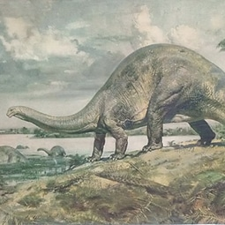
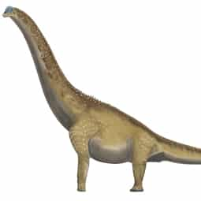
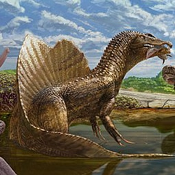
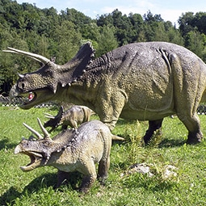
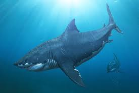

Brontosaurus (gr. βροντή, brontē 'trueno' y σαῦρος, sauros 'lagarto', "lagarto trueno"), o brontosaurio en castellano, es un género de dinosaurio saurópodo diplodócido que vivió a finales del periodo Jurásico hace aproximadamente entre 155 a 152 millones de años en la época del Kimmeridgiense de Norteamérica. Se conocen tres especies de este género.
Brontosaurus fue originalmente nombrado por su descubridor Othniel Charles Marsh en 1879. Brontosaurus por mucho tiempo había sido considerado como un sinónimo más moderno de Apatosaurus, y la especie original, Brontosaurus excelsus fue reclasificada como A. excelsus en 1903. Sin embargo, un extenso estudio publicado en 2015 concluyó que Brontosaurus es un género válido de saurópodo y distinto de Apatosaurus.12 En el mismo estudio se reclasificó a dos especies que habían sido consideradas anteriormente como parte de Apatosaurus como Brontosaurus parvus y Brontosaurus yahnahpin.1 Las especies de Brontosaurus se extienden en un rango temporal de 155 a 152 millones de años, durante la época del Kimmeridgiense de la zona inferior a media de la Formación Morrison en Wyoming y Utah, en Estados Unidos.3
Para ser un dromeosáurido, Velociraptor era relativamente pequeño, más pequeño que Deinonychus y Achillobator, los adultos alcanzaban en promedio una longitud de 1,8 metros, y 0,5 de altura a la cadera, pesando cerca de 15 kilogramos.2 El rango de tamaños varía de 1,5 y 2,07 metros de largo,34 con una masa corporal de entre 15 y 18,3 kilogramos.
Es posible de que Velociraptor estuviese cubierto de plumas, no solo plumón cobertor sino que también presentaba plumas complejas en los antebrazos67 semejantes a las rémiges de las aves actuales. Sin embargo, este curioso animal nunca pudo volar. Prominentes puntos de inserción en los antebrazos, posibles sitio de unión de las plumas del "ala" e indicador directo de una cubierta de plumas, se han informado del cúbito de un solo espécimen de Velociraptor, IGM 100/981, que representa un animal de aproximadamente 1,5 metros de largo. y 15 kilogramos de peso. El espacio de 6 protuberancias conservadas sugiere que pueden haber estado presentes 8 protuberancias adicionales, lo que da un total de 14 protuberancias en el que se desarrollaron grandes plumas secundarias, plumas de "ala" que se derivan del antebrazo.8 Sin embargo, el número de muestra se ha corregido a IGM 100/3503 y su remisión a Velociraptor puede requerir una revaluación, en espera de más estudios.9 Sin embargo, existe una fuerte evidencia filogenética de otros parientes de dromeosáuridos que indican la presencia de plumas en Velociraptor, incluidos dromeosáuridos como Microraptor o Zhenyuanlong.1011 Es posible de que Velociraptor estuviese cubierto de plumas, no solo plumón cobertor sino que también presentaba plumas complejas en los antebrazos67 semejantes a las rémiges de las aves actuales. Sin embargo, este curioso animal nunca pudo volar. Prominentes puntos de inserción en los antebrazos, posibles sitio de unión de las plumas del "ala" e indicador directo de una cubierta de plumas, se han informado del cúbito de un solo espécimen de Velociraptor, IGM 100/981, que representa un animal de aproximadamente 1,5 metros de largo. y 15 kilogramos de peso. El espacio de 6 protuberancias conservadas sugiere que pueden haber estado presentes 8 protuberancias adicionales, lo que da un total de 14 protuberancias en el que se desarrollaron grandes plumas secundarias, plumas de "ala" que se derivan del antebrazo.8 Sin embargo, el número de muestra se ha corregido a IGM 100/3503 y su remisión a Velociraptor puede requerir una revaluación, en espera de más estudios.9 Sin embargo, existe una fuerte evidencia filogenética de otros parientes de dromeosáuridos que indican la presencia de plumas en Velociraptor, incluidos dromeosáuridos como Microraptor o Zhenyuanlong.1011 Es posible de que Velociraptor estuviese cubierto de plumas, no solo plumón cobertor sino que también presentaba plumas complejas en los antebrazos67 semejantes a las rémiges de las aves actuales. Sin embargo, este curioso animal nunca pudo volar. Prominentes puntos de inserción en los antebrazos, posibles sitio de unión de las plumas del "ala" e indicador directo de una cubierta de plumas, se han informado del cúbito de un solo espécimen de Velociraptor, IGM 100/981, que representa un animal de aproximadamente 1,5 metros de largo. y 15 kilogramos de peso. El espacio de 6 protuberancias conservadas sugiere que pueden haber estado presentes 8 protuberancias adicionales, lo que da un total de 14 protuberancias en el que se desarrollaron grandes plumas secundarias, plumas de "ala" que se derivan del antebrazo.8 Sin embargo, el número de muestra se ha corregido a IGM 100/3503 y su remisión a Velociraptor puede requerir una revaluación, en espera de más estudios.9 Sin embargo, existe una fuerte evidencia filogenética de otros parientes de dromeosáuridos que indican la presencia de plumas en Velociraptor, incluidos dromeosáuridos como Microraptor o Zhenyuanlong.
| |
 | |
|  |  |  |